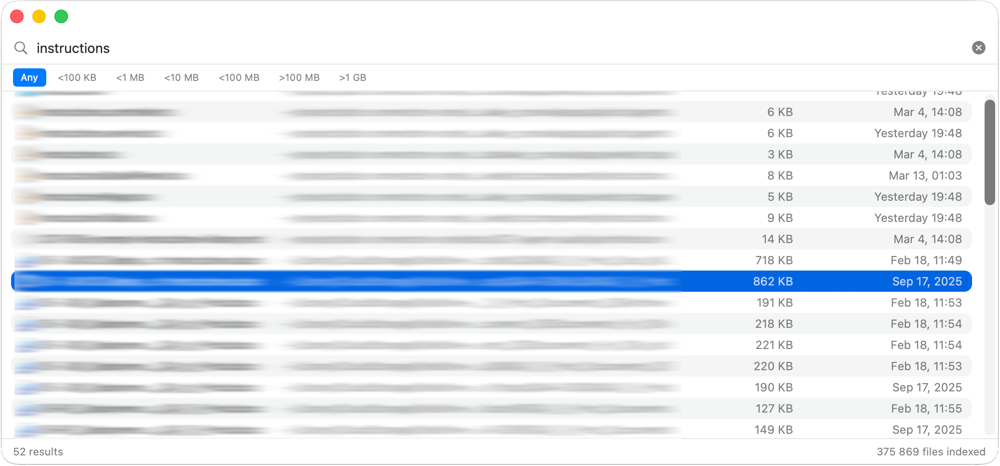

McFind
Lightning-fast file search for macOS. Find anything, instantly.
Lightning-fast file search for macOS. Find anything, instantly.

Everything you need for fast file searching on macOS
Indexes your home directory for instant file searching. Search results appear in under 50ms.
Clean, native macOS interface built with SwiftUI. Feels right at home on your Mac.
Index SharePoint, OneDrive, Google Drive, and iCloud Drive by default.
Use arrow keys to navigate, Enter to open files. No mouse needed.
Automatically detects file system changes and keeps the index up to date.
Control indexing per folder. Fine-grained control over what gets indexed.
Choose your installation method
Latest v0.2.8Because McFind is not yet notarized with Apple, macOS blocks the first launch. Run this once in Terminal to fix it:
xattr -dr com.apple.quarantine /Applications/McFind.app
Right-click McFind.app in Finder → Open → click Open in the dialog. After doing this once, McFind opens normally every time.
Navigate with ease
Built for speed and efficiency
Instant search results powered by a robust database engine
Non-blocking file indexing with real-time progress indicator
Automatically skips caches, logs, and build artifacts
Typical index size: 50-100MB for ~100k files